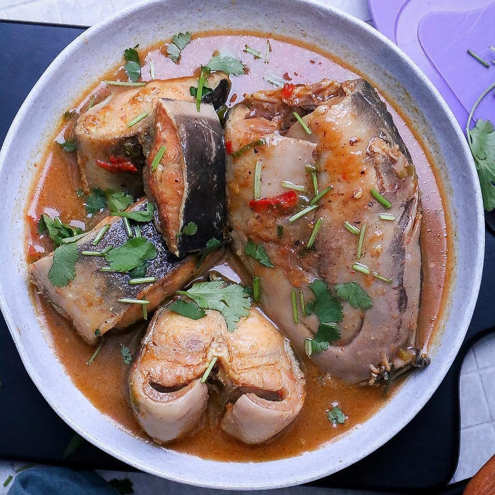

Nigeria is a country blessed with diverse culture, languages and ethnicity.
One feature that makes her stand out in the international space is her different delicacies.
Each culture has it's own unique dish and different methods of preparation.
Different Nigerian Foods To Try
There are different Nigerian delicacies to try out. Some are however more expensive to prepare than others.
Here are a few recipes of some Nigerian foods you can enjoy.
Afang Soup
Catfish Peppersoup
Edikang Ikong Soup
Yam and Egg Sauce
Afang Soup
Source.
This is popular Nigerian delicacy, native to the Efik tribe of Cross River State,
a soup enjoyed by everyone and can be eaten with variety of swallows including; Semovita, Eba, Fufu or Wheat.
This dish when well prepared is bound to have licking your plates
Ingredients;
Assorted Meat
Afang leaves (popularly called Okazi in the SouthSouth/East)
Water leaf
Palm oil
Dried Fish
Stock fish
Periwinkle (preferably with the shell)
Ground scotch bonnet Pepper
Ground Crayfish
Salt and seasoning cubes
Recipe for Afang Soup :
Wash and cut water leaves: Pound or grind afang leaves
Cook Stockfish with little water, preferably in a pressure pot to allow it soften quickly.
Add Dry fish into the pot and allow it simmer for 3 minutes.
Add washed meats, season with salt and seasoning cubes to preffered taste and allow simmer until well cooked, add the stock and dried fish in th
Add the water leaves and allow to cook in the stock for 2minutes.
Add grounded pepper, crayfish and pepper , leave to cook for some minutes.
Add palm oil (a sizable amount of oil is an important ingredient for this soup). Allow to boil for 3minutes.
Add the afang leaves, stir and allow to cook for 5 minutes.
check for taste and season again if needed.
Your tasty Afang soup is ready!!!! **Serve with any swallow of your choice.
Catfish Peppersoup
 Source.
This is another delicious Nigerian dish, native to the people of the South Southern part of Nigeria
Known for it's spicy flavor, it is well enjoyed as a whole meal, with rice or swallow.
Ingredients;
Catfish
Fresh Pepper, onion and tomatoes (blend together)
Scent leaf
Palm oil
Salt
Stock seasoning and spices
Recipe for Catfish Peppersoup :
Wash catfish with hot water till slime free and put in a clean pot.
Add your spice, blended mix and other ingredients.
Cover the pot and allow to cook for about 30-50minutes.
Your spicy catfish peppersoup is ready!!!! **Best served hot with boiled rice.
Edikang Ikong Soup
Source.
Edikang ikong soup is vegetable soup that originated among the Efik people of
Crossriver and Akwaibom state in South Southern Nigeria.
This Nigerian soup recipe is nourishing in every sense of the word.
Ingredients;
1kg pumpkin leaves
600g beef, kanda(cow skin), shaki and dry fish
Pepper, salt and ground crayfish
200ml of palm oil
1 cup of periwinkle(shelled)
2 medium onions
2-3 stock cubes
Recipe for Edikang Ikong Soup :
Wash and cut the pumpkin and water leaves into tiny pieces.
Put them in separate sieves to drain out all the water.
Cut the kanda into small pieces.
Cook the beef, kanda and the dry fish with the 2 bulbs of diced onions.
Add the stock cubes with a little quantity of water.
When the meat is done to your taste, add a generous amount of
palm oil, with the crayfish and pepper and leave to boil for about 10 minutes.
Add the periwinkle and water leaves and cook for another 3-5 minutes.
Now add the pumpkin leaves and salt to taste.
Stir the contents of the pot very well and turn off the heat.
Cover the pot and leave to stand for about 4 minutes.
That's it, your rich Edikang Ikong Soup is ready!!
*The palm oil serves as the liquid in the Edikang ikong soup. **Best served with Garri(Eba), Semolina fufu, Amala, Cassava fufu or Pounded yam.
Yam and Egg Sauce
Source.
While this dish can not be traced to any ethnicity in Nigeria,
it is eaten and enjoyed by all. Yam is mostly grown in the Northern
part of Nigeria amongs't other regions.
Ingredients;
1 large yam
1 onion, chopped
4 eggs
2 medium-sized tomatoes, diced
2 tbsp vegetable oil
Salt
1 tsp dried thyme
1 tsp garlic powder
1 tsp garlic powder
Recipe for Yam and Egg Sauce:
Peel the yam and cut into your desired size.
Rinse with water and put in a pot of salted boiling water.
Boil for 20-25 minutes until the yam is soft.
Heat up the vegetable oil in a pan and sauté the onions and tomatoes until they are soft.
Whisk the eggs in a bowl and add the thyme, garlic powder, curry powder, and salt to the eggs.
Pour the egg mixture into the pan with the sautéed onions and cook for 3 minutes.
Check the yam to see if soft to your preference and filter out the salted water.
That's it! Your yam and egg sauce is ready. *The palm oil serves as the liquid in the Edikang ikong soup. **Best served with Garri(Eba), Semolina fufu, Amala, Cassava fufu or Pounded yam.